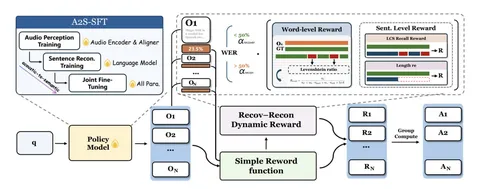
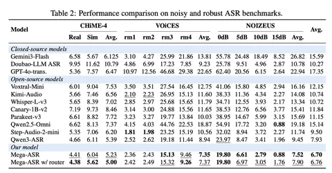

Mega-ASR: Towards In-the-wild^2 Speech Recognition via Scaling Up Real-world Acoustic Simulation
Разбираем статью со скромным названием Mega-ASR. Основной вклад работы — улучшение распознавания сложных аудио. Также авторы собрали и выложили свой датасет — VOICES-IN-THE-WILD-2M.
В реальных условиях, где есть разные шумы, ASR работает хуже. Так происходит, потому что шумов нет в данных. Кто-то пробует добавлять в данные отдельные шумы, но в обычно возникает не одна помеха, а целый комплекс.
Авторы ставят перед собой цель получить SotA-модель на данных с разными типами шумов, и при этом не просесть на чистых данных.
Выложенный датасет большой — на 11 тысяч часов. Состоит из синтетики с добавлением разных типов помех. Всего выделено семь «атомарных акустических эффектов»:
🔴 Noise — аддитивный шум;
🔴 Far-field — источник звука далеко;
🔴 Obstructed — на пути звука есть препятствие;
🔴 Echo & reverb — эхо и повторения звука;
🔴 Recording Coloration — артефакты при записи или проигрывании;
🔴 Electronic distortion — электронные искажения сигнала;
🔴 Transmission dropout — пропадания при передаче.
При генерации датасета пытались имитировать реальные ситуации (скажем, эхо в церкви), чего нет в датасетах, на которых учатся SotA ASR. Для каждого эффекта есть гиперпараметры, которые настраивают, чтобы комбинировать шумы. Так пытаются избежать ситуации, когда один эффект гасит другой. Всего есть 54 комбинации шумов.
Авторы не делали для Mega-ASR свой претрейн, а использовали Qwen3-ASR c немного изменёнными SFT и RL, и обучали для него LoRA-адаптеры.
SFT интересна тем, что проходила в три этапа:
1) Acoustic warm-up. Учат только акустическую часть — энкодер и алайнер (адаптер, который переводит hidden encoder в hidden LLM). Данные подают не все сразу, а увеличивают их сложность в несколько этапов. Сложность определяют по WER распознавания Qwen. На первом этапе подают записи с WER < 30, далее расширяют до WER < 50 и в конце — WER < 70. Записи с WER > 70 выкидывают с целью сохранить стабильность тренировок.
2) Semantic adaptation. Энкодер и алайнер замораживают, учат только LLM, уже на всех данных.
3) Joint training. Учат всё сразу — и LLM, и энкодер, и адаптер.
RL хорошо работает там, где WER маленький. Тогда ошибки — это в основном word-level confusion, которые можно исправлять. Если WER большой, происходит развал, и обычный objective не помогает. Поэтому делают reward из двух частей:
Статический rule-based reward — по сути MWER со штрафом за повторения.
Динамический reward, состоящий из token-level refinement reward и sentence-level reconstruction reward.
Token-level refinement reward рассчитывается как WER с небольшим изменением: для ошибок substitution добавляется разделение на hard и soft errors — в зависимости от того, насколько сильно предсказанное слово отличается от оригинального. Soft errors в реворде идут с меньшим весом, который регулируется гиперпараметром.
Sentence-level reconstruction reward состоит из двух частей. Первая считается на базе LCS и оценивает, насколько хорошо восстанавливается структура предложения. Вторая часть штрафует за разницу в длине между гипотезой и таргетом.
Веса между пословной и семантической частями реворда зависят от WER. Если он маленький, больше вклад пословной части, если большой — то семантики. Итоговый лосс складывается из базового и динамического с подобранными коэффициентами.
Сравниваются с большим количеством моделей. На более зашумлённых датасетах (CHiME-4, VOiCES, NOIZEUS) модель прилично побеждает. На более чистых (LibriSpeech, Fleurs) — проигрывает, но цифры приемлемые. На собственном бенче также уверенно побеждают.
С адаптивным роутингом, который позволяет использовать базовую тушку на чистых аудио, получили метрики, сравнимые с обычным Qwen, сохранив выигрыш на шумных примерах.
Кроме экспериментов с подбором гиперпараметров, авторы сделали аблейшн для своего динамического реворда и сравнили его с использованием Gemini в качестве LLM-judge на RL-стадии. Получили сравнимое качество, выиграв по скорости обучения в три раза.
Артур Яковлев❣ Специально для Speech Info
Разбираем статью со скромным названием Mega-ASR. Основной вклад работы — улучшение распознавания сложных аудио. Также авторы собрали и выложили свой датасет — VOICES-IN-THE-WILD-2M.
В реальных условиях, где есть разные шумы, ASR работает хуже. Так происходит, потому что шумов нет в данных. Кто-то пробует добавлять в данные отдельные шумы, но в обычно возникает не одна помеха, а целый комплекс.
Авторы ставят перед собой цель получить SotA-модель на данных с разными типами шумов, и при этом не просесть на чистых данных.
Выложенный датасет большой — на 11 тысяч часов. Состоит из синтетики с добавлением разных типов помех. Всего выделено семь «атомарных акустических эффектов»:
При генерации датасета пытались имитировать реальные ситуации (скажем, эхо в церкви), чего нет в датасетах, на которых учатся SotA ASR. Для каждого эффекта есть гиперпараметры, которые настраивают, чтобы комбинировать шумы. Так пытаются избежать ситуации, когда один эффект гасит другой. Всего есть 54 комбинации шумов.
Авторы не делали для Mega-ASR свой претрейн, а использовали Qwen3-ASR c немного изменёнными SFT и RL, и обучали для него LoRA-адаптеры.
SFT интересна тем, что проходила в три этапа:
1) Acoustic warm-up. Учат только акустическую часть — энкодер и алайнер (адаптер, который переводит hidden encoder в hidden LLM). Данные подают не все сразу, а увеличивают их сложность в несколько этапов. Сложность определяют по WER распознавания Qwen. На первом этапе подают записи с WER < 30, далее расширяют до WER < 50 и в конце — WER < 70. Записи с WER > 70 выкидывают с целью сохранить стабильность тренировок.
2) Semantic adaptation. Энкодер и алайнер замораживают, учат только LLM, уже на всех данных.
3) Joint training. Учат всё сразу — и LLM, и энкодер, и адаптер.
RL хорошо работает там, где WER маленький. Тогда ошибки — это в основном word-level confusion, которые можно исправлять. Если WER большой, происходит развал, и обычный objective не помогает. Поэтому делают reward из двух частей:
Статический rule-based reward — по сути MWER со штрафом за повторения.
Динамический reward, состоящий из token-level refinement reward и sentence-level reconstruction reward.
Token-level refinement reward рассчитывается как WER с небольшим изменением: для ошибок substitution добавляется разделение на hard и soft errors — в зависимости от того, насколько сильно предсказанное слово отличается от оригинального. Soft errors в реворде идут с меньшим весом, который регулируется гиперпараметром.
Sentence-level reconstruction reward состоит из двух частей. Первая считается на базе LCS и оценивает, насколько хорошо восстанавливается структура предложения. Вторая часть штрафует за разницу в длине между гипотезой и таргетом.
Веса между пословной и семантической частями реворда зависят от WER. Если он маленький, больше вклад пословной части, если большой — то семантики. Итоговый лосс складывается из базового и динамического с подобранными коэффициентами.
Сравниваются с большим количеством моделей. На более зашумлённых датасетах (CHiME-4, VOiCES, NOIZEUS) модель прилично побеждает. На более чистых (LibriSpeech, Fleurs) — проигрывает, но цифры приемлемые. На собственном бенче также уверенно побеждают.
С адаптивным роутингом, который позволяет использовать базовую тушку на чистых аудио, получили метрики, сравнимые с обычным Qwen, сохранив выигрыш на шумных примерах.
Кроме экспериментов с подбором гиперпараметров, авторы сделали аблейшн для своего динамического реворда и сравнили его с использованием Gemini в качестве LLM-judge на RL-стадии. Получили сравнимое качество, выиграв по скорости обучения в три раза.
Артур Яковлев


812 просмотров · 31 реакций
Открыть в Telegram · Открыть пост на сайте